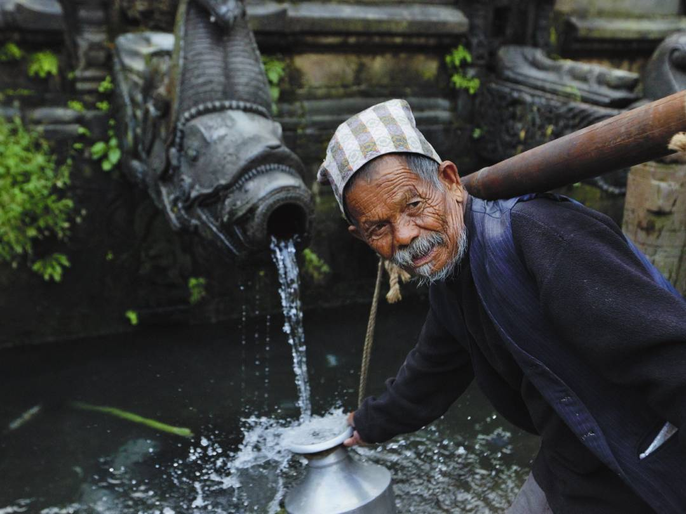

History
By Miles Tallia
The history of waterfountains (otherwise known as drinking fountains and also called "bubblers" by idiots) goes back very far. In fact, almost every historical figure you can think of lived in a world full of these wonderful creations (although they may have looked very different as we will explore). For waterfountains did indeed exist before many other forms of plumbing. We were still digging holes in the ground and calling them toilets when the first people would take their buckets to get filled with water.
The first fountain came around 3000 B.C. But don't get your hopes up, for it was just a stupid little thing not even completely devoted to drinking!
This is about what we can expect of the first fountains (this one specifically in Napal):
Now I grant you, this does not look like the classic waterfountain you know and love; and that's because it was meant to be used in a slightly different way. Originally, waterfountains weren't used as a personal refreshing device, they were great big taps of water to be used by whole towns to fit their water-related needs. There were fountains curtailed only for drinking, but none at the push of a button and none with an upwardly projected water stream.
As we just saw, waterfountains most likely began in Nepal, but they really flourished in Rome. Rome revolutionized the world of water, they built many things with their humble aqueducts. Bath houses, plumbing, drinking water, bathrooms, decorative fountains, and most amazingly, drinking fountains! Unfortunately though there was this pretty annoying thing that happened called the dark ages, and it was pretty devastating to the waterfountain economy. But don't despair, for London began again the expansion of waterfountains not 1300 years later!
This is what a common form of water dispensing looked like way back when! I wish we still stylized dragons into our waterfountains!
The seventeenth century is regarded as a golden age for fountains and other water-dispensing public works, at least in London. There was a period where, on average, a new water feature was being added to the city every ten days!!! What an amazing time it must have been to be alive but alas we cannot go back. But it was not the most amazing time to be alive, that would be the early 1900's, when the first waterfountain was invented!
Halsey Willard Taylor with the Halsey Taylor Company; and Luther Haws with the Haws Sanitary Drinking Faucet Co. started this revolution and I celebrate both their birthdays whenever they come up! The two figured that the current health conditions surrounding public water consumption were absolutely horrendous, so they came up with the divine. It was these men who made what you know and love today.